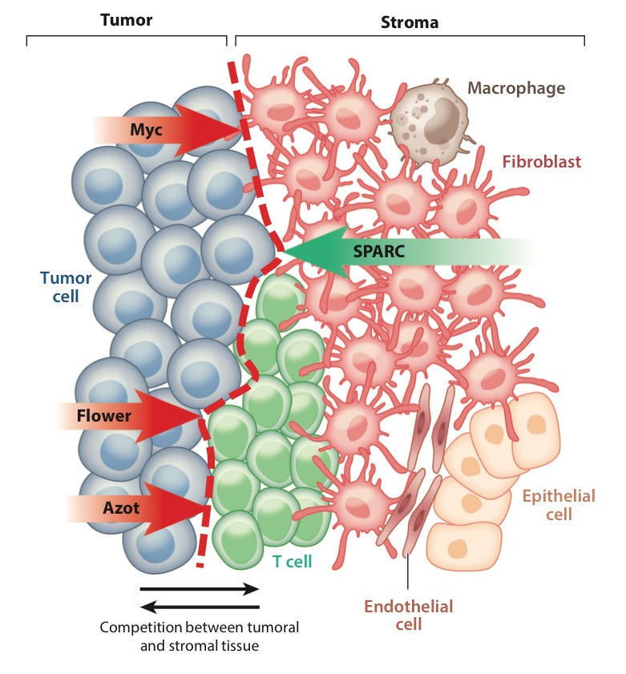
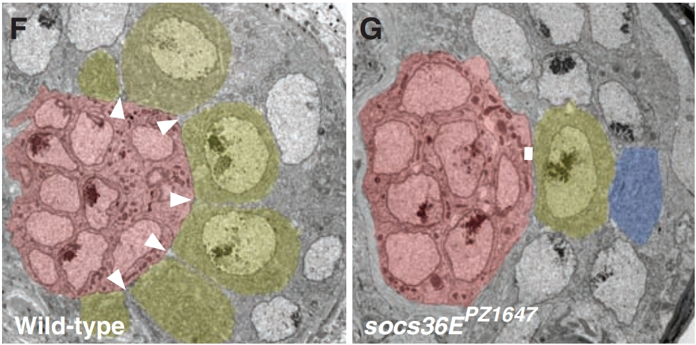
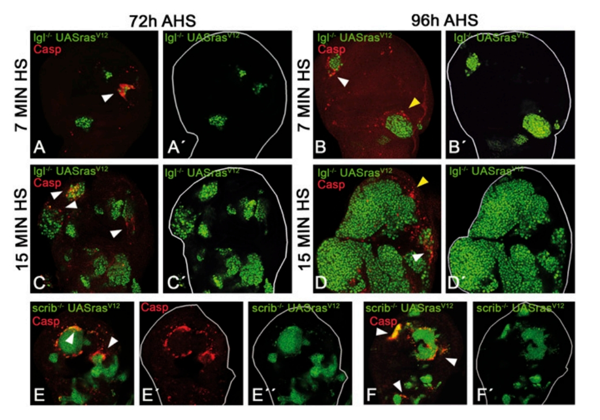

Chapter 5 Cell Competition
5.1 Introduction
One of the first examples of cell competition was the discovery of Minutes heterozygous cells (M+/-) in 1975 (Morata Dev Bio 1975 and Gogna Ann Rev Gen 2015). This along with Myc and Wnt mediated cell competition provide a good understanding of what it takes for certain cells to survive instead of their peers, but recent deep sequencing has revealed that alone, the Minutes mechanism may not always be sufficient to understand cell competition.
5.2 Trophic Theory
Phenotypically, Drosophila with M(+/-) showed a reduced growth rate, but eventually reached full size with no noticeable defects. If M+/- were induced early during development, they were subsequently lost, and only retained into adulthood if they were induced late in development (Simpson Dev Bio 1979). Moreover, the number of WT or M+/- that were recovered at any given point were as would be predicted by just the difference in growth rates alone. 25 years later, this process of elimination was found to be apoptosis dependent, and driven by reduced Decapentaplegic (Dpp) pathway activation in M+/- cells (Moreno Nature 2002) (The Dpp morphogen is ortholog of the vertebrate Bone Morphogenetic Protein (BMP) and is necessary for patterning of the 15 imaginal discs in Drosophila). These experiments demonstrated how the Minutes gene switches between a ‘winner’ and a ‘loser’ phenotype. In the resultant ‘ligand capture model’, WT cells can outcompete Minutes cells because they can bind up the prosurvival trophic factor Dpp, while depriving the Minutes cells of this signal, leading to their apoptosis.
This idea of supercompetitors has been demonstrated with the proto-oncogene Myc in Drosophila. When Myc is overexpressed in developing Drosophila the Myc overexpressing cells grow rapidly and cause the elimination of surrounding WT cells through induction of apoptosis, as seen in the outcompetition of the Minutes cells (de la Cova C Cell 2004 and Moreno Cell 2008). The idea of supercompetitors is that the particular mutation carried by a cell confers on it some significant advantage over its peers, yet when Myc is downregulated, cells are at a disadvantage and are lost (Johnston Cell 1999). It appears that population levels of Myc regulate the fitness of a cell such that a cell must have more Myc than its peers to have an advantage, and the number of copies of Myc a cell has over its peers determines the magnitude of its advantage (Moreno Cell 2004).
People have continued to explore the ‘trophic theory’ of cell competition, finding other supporting evidence in the Wingless (Wg, Wnt ortholog) pathway. Just as Minute cells and Myc overexpressing cells do, Wg overexpressing cells in Drosophila induce JNK mediated apoptosis (Vincent Dev Cell 2011) in peers as a means of outcompeting them (Giraldez Development 2003).
5.3 Modern Theory
Secreted protein acidic and rich in cysteine (SPARC, osteonectin) is often expressed by loser cells (Portela Drosophila 2010), and as a secreted protein that modulates cell-cell and cell-ECM interactions, it is induced during morphogenesis, injury remodeling, and development (Clark J Cell Biochem 2008) and during cancer progression (Bradshaw Int J Biochem Cell Bio 2012). SPARC is important for cell competition because it raises the threshold for caspase activation in loser cells, thereby protecting cells of otherwise reduced fitness (Portela Drosophila 2010). SPARC can be a biomarker of certain types of cancer (Chlenski Semin Cell Dev Bio 2010) and may play a significant role in competition regulation during oncogenesis (Yamada Med Mol Morph 2015). SPARC is often associated with a number of cancers including breast cancer (Witkiewicz Cancer Bio Ther 2010, Bergamaschi J Path 2008), melanoma (Fenouille Pigment Cell Melanoma Res 2011, Massi Human Path 1999), osteosarcoma (Dalla-Torre BMC Cancer 2006), glioblastoma (Rich Cancer Res 2005), and bladder cancer (Yamanaka J Urol 2001). SPARC expression in surrounding stromal cells is indicative of a better prognosis in NSCLC (Koukourakis Cancer Res 2003), colon cancer (Lian J Mol Cell Card 2003), and pancreatic adenocarcinoma (Mantoni Cancer Bio Ther 2008).
knitr::include_graphics(rep("images/04-1.jpg", 1))
knitr::opts_chunk$set(comment=NA, fig.width=1, fig.height=1)Flower is a putative transmembrane protein that has three isoforms, two are losers and one is a winner in Drosophila growing disc epithelium (Rhiner Drosophila Dev Cell 2010). RNAi against the losers is sufficient to make a cell a winner and vice versa for flower expressing cells in Drosophila epithelium. When DMBA-TPA is used to promote papilloma formation in mice, loser flower isotypes are expressed by surrounding stromal cells, while winner flower isotypes are expressed by the papilloma, suggesting that this mechanism is conserved from flies to vertebrates (Petrova Dis Models Mech 2012).
Azot is an intracellular protein that integrates the information from flower and SPARC both from the same cell and from surrounding cells and decide if its cell should apoptose (Petrova Commun Integr Biol 2011). If cells have low expression levels of loser flower isoform or high SPARC, or surrounding cells have higher expression levels of loser flower, azot is not transcribed and the cell will survive (Merino Cell 2015).
It might be possible that while tumor cells are growing and expanding, they express fitness impacting genes like flower, Azot, and Myc, which gives them a competitive advantage over surrounding stromal cells.
5.4 Localization
In the Drosophila gonad, both germline stem cells (GSCs) and somatic stem cells (cyst progenitor cells, CPCs) share a niche created by stromal cells that make up the hub and both share a requirement for JAK-STAT signaling to maintain their stemness. This system provides an understanding for how a single niche with multiple cell types is not overrun by the one that cycles the most rapidly.
knitr::include_graphics(rep("images/04-2.jpg", 1))
knitr::opts_chunk$set(comment=NA, fig.width=1, fig.height=1)In the Drosophila testis, suppressor of cytokine signaling (SOCS36E) which is a JAK-STAT antagonist is expressed at high levels in the hub and at low levels in the CPCs. The JAK-STAT signaling in part drives the expression of position specific βPS-integrin which is used by both the GSCs and the CPCs to bind and localize to the hub. The image to the right shows in F how typically the GSCs (yellow) have a large surface area integrin mediated connection with the hub, while CPCs (gray) only make small integrin mediated connections. As shown in G, when SOCS36E is inhibited in the CPCs, JAK-STAT signaling is downregulated resulting in an upregulation of βPS-integrin which then allows the CPCs to bind more readily to the hub. This increased surface area of association between the hub and the CPCs allows the CPCs to outcompete the GSCs for binding spots, and eventually results in loss of GPCs (Issigonis Science 2009). Aberrant JAK-STAT signaling which includes loss of SOCS expression in mammals(Bowman Oncogene 2000, Pontier J Cell Sci 2009, Leeman Expert Opin Biol Ther 2006), and may play a role in stem cell misregulation driven cancers (Reya Nature 2001).
Similar to mammals, germline stem cell transplants in Drosophila are more efficient if the original GSCs are first depleted, supporting a space-filling model of GSC-hub binding (Bhattacharya Eur J Imm 2008, Oatley Ann Rev Cell Dev Bio 2008). Upon GSC loss, hub binding space is freed, which drives dedifferentiation of somatic stem cells that then fill the empty area adjacent to other GSCs (Sheng Cell Stem Cell 2009).
In the skin, collagen 17 (COL17A1), a component of the hemidesmosome, fluctuates in response to genomic and oxidative stress induced proteolysis. The stem cells that maintain high levels of COL17A1 are able to maintain contact with the niche and symmetrically divide, allowing them to outcompete neighbors that express low levels of COL17A1 as they will divide asymmetrically. With age it seems that all skin stem cells begin to lose their COL17A1 expression and eventually start to delaminate, and contributing to aging. Forced maintenance of COL17A1 however, seems to somewhat rescue skin aging (Liu et al. 2019).
5.5 Microenvironment
Lethal Giant Larvae (lgl) and scribble (scrib) are tumor suppressor genes in Drosophila that play necessary roles in establishing cell polarity and asymmetric cell divisions (Knoblich Cell 2008). Larvae that are constitutively mutant for lgl develop diffuse, ultimately lethal tumors, but clones of mutant cells surrounded by WT cells do not produce tumors (Froldi BMC Biol 2010, Igaki Dev Cell 2009).
knitr::opts_chunk$set(comment=NA, fig.width=1, fig.height=1)
knitr::include_graphics(rep("images/04-3.jpg", 1)) It appears that scrib mutant cells undergo JNK-driven apoptosis when surrounded by WT cells (Brumby EMBO 2003). This resembles minutes and Dpp cell competition (Moreno Nature 2002, Morata Dev Bio 1975). When lgl- cells are created using a heat shock method in Drosophila in order to affect only a small percentage of cells, the cells would still apoptose, and do so preferentially at the border of clones indicating a short-range apoptosis inducing mechanism originating from WT cells. Interestingly, when larvae were heat shocked for different amounts of time, there was an exponential increase in surviving non-apoptosing lgl cells (figure) (Menéndez et al. 2010). The theory for why this occurs is that lgl- clones need to form a protective niche to survive, and merging clones can facilitate this. This may solve the riddle of how all oncogenic mutations could be present in a given tissue and not give rise to a cancer, it may be that a critical mass of oncogenically initiated cells is necessary before they can avoid WT cell outcompetition.
References
Liu, Nan, Hiroyuki Matsumura, Tomoki Kato, Shizuko Ichinose, Aki Takada, Takeshi Namiki, Kyosuke Asakawa, et al. 2019. “Stem Cell Competition Orchestrates Skin Homeostasis and Ageing.” Nature. Nature Publishing Group, 1.